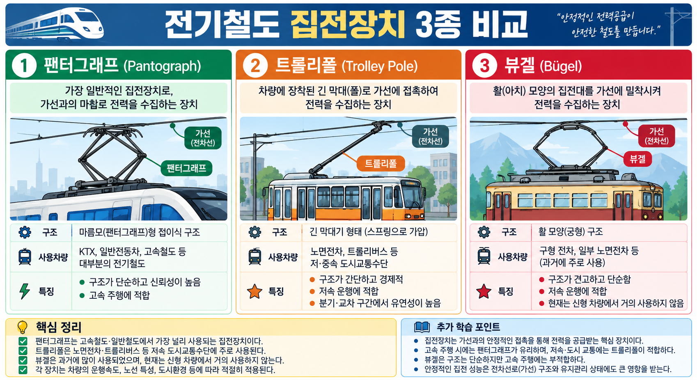
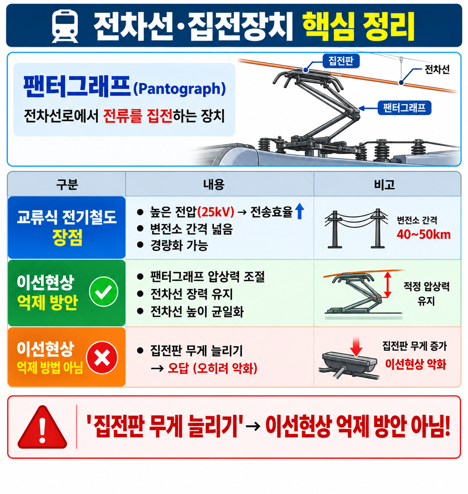

| 구분 | 장치명 | 특징 |
|---|---|---|
| 집전장치 O | 팬터그래프 | 전기철도 주력 집전장치 — 가선에서 슬라이딩 접촉 |
| 트롤리 폴 | 전차용 — 막대형 | |
| 뷰겔 | 활형(弓型) 집전장치 | |
| 집전슈 | 3레일 방식 — 레일에 접촉 | |
| 집전장치 X | 축전지 | 전력 저장장치 — 전차선에서 직접 전력 수집하지 않음 |


| 문항 | 정답 | 핵심 해설 |
|---|---|---|
| Q1 | ③ | 팬터그래프: 고속철도(KTX 등)에서 가공전차선과 접촉해 전력을 집전하는 장치. 트롤리 폴은 저속 노면전차, 집전슈는 제3레일 방식. |
| Q2 | ① | 팬터그래프: 현대 전기철도의 대표 집전장치. 전차선과 슬라이딩 접촉으로 전력 수집. |
| Q3 | ① | 집전장치 중 팬터그래프가 현대 전기철도에서 가장 보편적. 축전지는 집전장치 아님. |